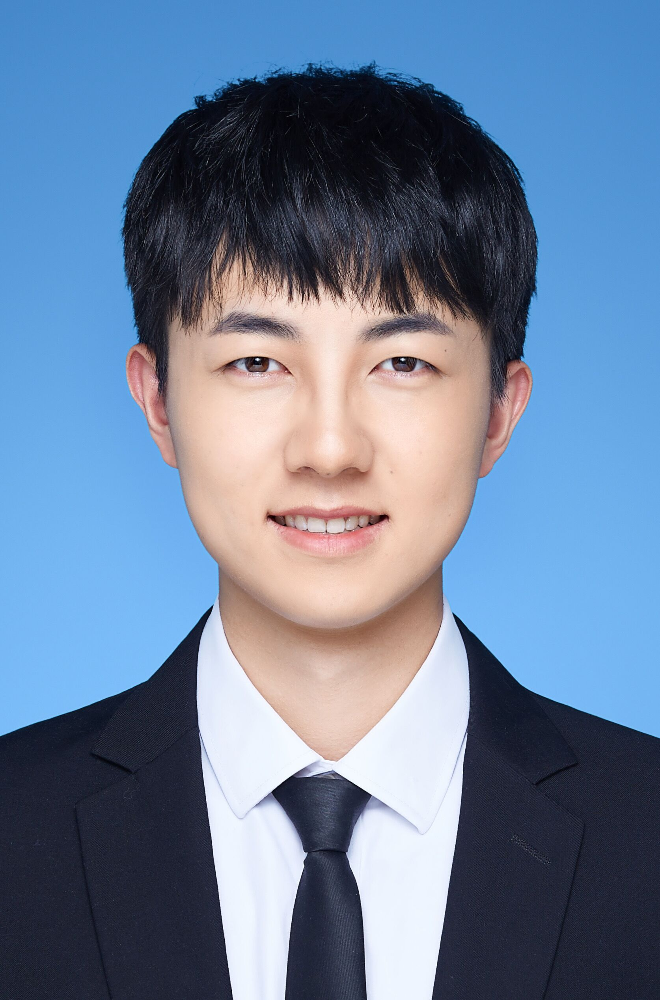
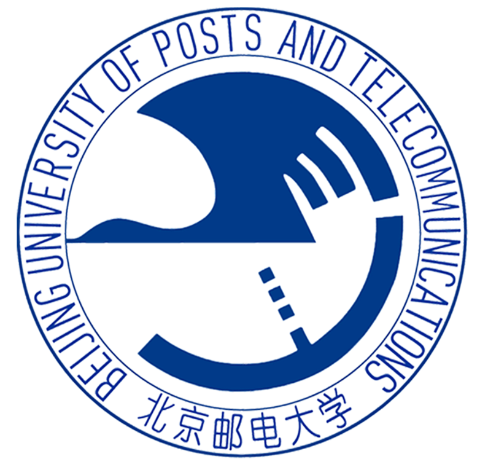

黄心阳(Xinyang Huang)
|
 |
硕士研究生，共青团员 |
关于我
我现在是一名一年级的硕士研究生, 就读于北京邮电大学 人工智能学院。
我的研究兴趣主要包括: 计算机视觉、迁移学习（小样本分割、领域自适应）等。
教育经历
|
 |
硕士 北京邮电大学 (2023.9 ~ 2026.7)
|
|
|
本科 西安电子科技大学 (2019.9 ~ 2023.7)
|
学术论文
RestNet: Boosting Cross-Domain Few-Shot Segmentation with Residual Transformation Network
Xinyang Huang, Chuang Zhu, Wenkai Chen
British Machine Vision Conference (BMVC), 2023.Semi-supervised Domain Adaptation via Prototype-based Multi-level Learning
Xinyang Huang, Chuang Zhu, Wenkai Chen
International Joint Conference on Artificial Intelligence (IJCAI), 2023.